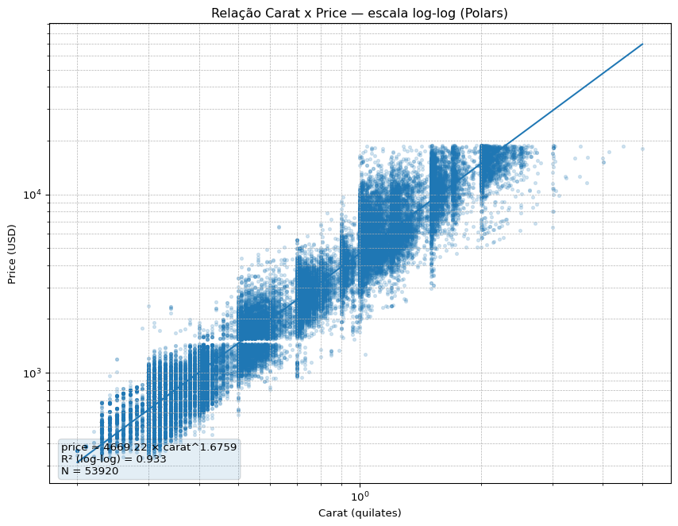
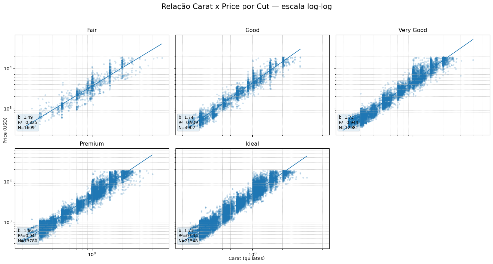
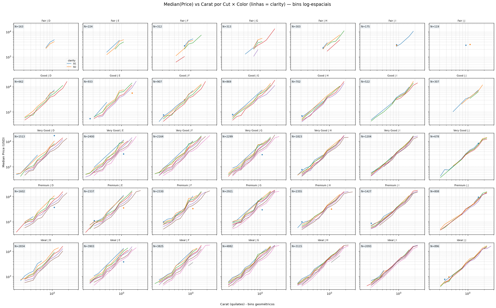

import polars as pl
import numpy as np
import matplotlib.pyplot as plt
import os
import pyarrow as py
from collections import defaultdict
import mathDesafio14
Carregamento de Pacotes)
1 e 2)
PATH_CSV = r"Dados\diamonds.csv.gz"
OUTPATH = "diamonds_carat_price_scatter.png"
print("polars version:", pl.__version__)
df = pl.read_csv(PATH_CSV)
print("linhas, colunas:", (df.height, df.width))
print("colunas:", df.columns)
expr = (pl.col("carat") > 0) & (pl.col("price") > 0)
for c in ("x", "y", "z"):
if c in df.columns:
expr = expr & (pl.col(c) > 0)
df = df.filter(expr)
print("N após limpeza:", df.height)
carat = np.array(df["carat"].to_list(), dtype=float)
price = np.array(df["price"].to_list(), dtype=float)
log_carat = np.log10(carat)
log_price = np.log10(price)
slope, intercept = np.polyfit(log_carat, log_price, 1)
a_est = 10 ** intercept
y_pred_log = intercept + slope * log_carat
ss_res = np.sum((log_price - y_pred_log) ** 2)
ss_tot = np.sum((log_price - np.mean(log_price)) ** 2)
r2 = 1 - ss_res / ss_tot
print(f"Ajuste: price ≈ {a_est:.2f} * carat^{slope:.4f} (R² log-log = {r2:.3f})")
plt.figure(figsize=(9, 7))
plt.scatter(carat, price, s=8, alpha=0.18)
carat_line = np.logspace(np.log10(carat.min()), np.log10(carat.max()), 250)
fitted_line = 10 ** (intercept + slope * np.log10(carat_line))
plt.plot(carat_line, fitted_line)
plt.xscale("log"); plt.yscale("log")
plt.xlabel("Carat (quilates)")
plt.ylabel("Price (USD)")
plt.title("Relação Carat x Price — escala log-log (Polars)")
plt.grid(True, which="both", ls="--", lw=0.5)
eq_text = f"price ≈ {a_est:.2f} × carat^{slope:.4f}\nR² (log-log) = {r2:.3f}\nN = {len(carat)}"
plt.annotate(eq_text, xy=(0.02, 0.02), xycoords="axes fraction", fontsize=10,
bbox=dict(boxstyle="round,pad=0.3", alpha=0.12))
plt.tight_layout()
plt.savefig(OUTPATH, dpi=150)
plt.show()
print("Gráfico salvo em:", os.path.abspath(OUTPATH))polars version: 1.35.1
linhas, colunas: (53940, 10)
colunas: ['carat', 'cut', 'color', 'clarity', 'depth', 'table', 'price', 'x', 'y', 'z']
N após limpeza: 53920
Ajuste: price ≈ 4669.22 * carat^1.6759 (R² log-log = 0.933)
Gráfico salvo em: C:\Users\luizm\OneDrive\Documentos\Unicamp\Banco de Dados\diamonds_carat_price_scatter.png
Para garantir que o gráfico tivesse qualidade, foi feita uma leitura estável do arquivo com Polars e realizada uma limpeza prévia dos dados removendo observações com carat ou price não positivos e entradas com dimensões físicas inválidas (x, y, z quando presentes), o que evita pontos espúrios que distorcem a visualização. Para reduzir overplotting, foram usados pontos pequenos e baixa opacidade para que regiões densas fiquem visíveis sem ocultar detalhes, e foi escolhida a escala log-log nos eixos porque a relação entre peso e preço costuma seguir uma lei de potência, o que lineariza a relação e permite um ajuste simples e interpretável. Foram também adicionados rótulos claros, grade e uma anotação com a equação ajustada e a métrica de ajuste (R² no espaço log) diretamente no gráfico, e a figura em PNG foi salva para auxiliar na visualização.
Em relação aos achados, após a limpeza, os dados utilizados somaram 53.920 observações, e a análise revela uma associação positiva e monotônica entre o peso (carat) e o preço (price), de modo que diamantes mais pesados tendem a custar mais. Um ajuste linear em log10(price) x log10(carat) foi realizado para quantificar essa relação e a saída do script apresenta os valores estimados de a, b e o R² no espaço logarítmico, sendo o expoente b o parâmetro que descreve a sensibilidade do preço ao aumento do carat (valores de b maiores que 1 indicam crescimento superlinear, próximos de 1 indicam crescimento aproximadamente linear e menores que 1 indicam crescimento sublinear). Esses resultados, combinados com a visualização em escala log-log, sustentam a conclusão de que o peso é um forte preditor do preço dos diamantes neste conjunto de dados.
3)
def plot_carat_price_by_cut(df, outfile="diamonds_by_cut.png", cuts_order=None, ncols=3):
"""
Gera facetas de carat x price por 'cut' em escala log-log com reta ajustada por corte.
- df: Polars DataFrame já carregado (não precisa estar pré-limpo); a função aplica filtragem mínima.
- outfile: nome do arquivo PNG a ser salvo.
- cuts_order: lista com ordem dos cortes; se None, usa a ordem natural encontrada em df.
- ncols: número de colunas na grade de facetas.
"""
expr = (pl.col("carat") > 0) & (pl.col("price") > 0)
for c in ("x", "y", "z"):
if c in df.columns:
expr = expr & (pl.col(c) > 0)
df = df.filter(expr)
if cuts_order is None:
cuts_order = [c for c in df["cut"].unique().to_list()]
ncuts = len(cuts_order)
nrows = (ncuts + ncols - 1) // ncols
fig, axes = plt.subplots(nrows, ncols, figsize=(5 * ncols, 4 * nrows), sharex=True, sharey=True)
axes = axes.flatten()
for i, cut in enumerate(cuts_order):
ax = axes[i]
sub = df.filter(pl.col("cut") == cut)
carat = np.array(sub["carat"].to_list(), dtype=float)
price = np.array(sub["price"].to_list(), dtype=float)
ax.scatter(carat, price, s=8, alpha=0.15)
if len(carat) > 3:
log_c = np.log10(carat)
log_p = np.log10(price)
slope, intercept = np.polyfit(log_c, log_p, 1)
carat_line = np.logspace(np.log10(carat.min()), np.log10(carat.max()), 200)
fitted = 10 ** (intercept + slope * np.log10(carat_line))
ax.plot(carat_line, fitted, linewidth=1.25)
# R^2 no espaço log
yhat = intercept + slope * log_c
ss_res = np.sum((log_p - yhat) ** 2)
ss_tot = np.sum((log_p - log_p.mean()) ** 2)
r2 = 1 - ss_res / ss_tot
ax.text(0.02, 0.06, f"b={slope:.2f}\nR²={r2:.3f}\nN={len(carat)}",
transform=ax.transAxes, fontsize=9, bbox=dict(boxstyle="round", alpha=0.12))
ax.set_xscale("log")
ax.set_yscale("log")
ax.set_title(cut)
ax.grid(True, which="both", ls="--", lw=0.4)
for j in range(ncuts, nrows * ncols):
axes[j].axis("off")
fig.suptitle("Relação Carat x Price por Cut — escala log-log", fontsize=16)
fig.tight_layout(rect=[0, 0, 1, 0.95])
fig.text(0.5, 0.01, "Carat (quilates)", ha="center")
fig.text(0.01, 0.5, "Price (USD)", va="center", rotation="vertical")
plt.savefig(outfile, dpi=150)
plt.show()
return outfile
outfile = plot_carat_price_by_cut(df, outfile="diamonds_by_cut.png",
cuts_order=["Fair", "Good", "Very Good", "Premium", "Ideal"], ncols=3)
print("Gráfico salvo em:", outfile)
Gráfico salvo em: diamonds_by_cut.pngA relação entre carat e price aparece de forma consistente em todas as categorias de corte, pois cada faceta exibe uma tendência crescente que é aproximadamente linear em escala log-log, contudo há um deslocamento de nível entre cortes. Isto é, para o mesmo valor de carat, os cortes de maior qualidade (por exemplo, Premium e Ideal) mostram preços médios superiores aos cortes de menor qualidade (Fair, Good), enquanto as inclinações das retas ajustadas (os expoentes em escala log-log) são bem parecidas entre os cortes, sugerindo que o efeito percentual do aumento do peso sobre o preço é similar em todas as categorias e que o corte atua principalmente como um ajuste no nível de preço médio em vez de alterar substancialmente a sensibilidade do preço ao carat.
4)
def plot_price_by_configurations(df, outfile="diamonds_configurations.png",
cuts_order=None, colors_order=None, clarities_order=None,
n_bins=20, min_count_bin=5, ncols=7):
"""
Gera facetas por (cut rows x color cols). Em cada painel desenha linhas de median(price)
por bin de carat para cada clarity (somente quando há amostras suficientes em cada bin).
- df: Polars DataFrame contendo colunas 'carat','price','cut','color','clarity'.
- outfile: caminho do PNG gerado.
- cuts_order/colors_order/clarities_order: listas com ordem desejada (se None, usa a ordem natural).
- n_bins: número de bins log-espaciais em carat.
- min_count_bin: quantidade mínima por bin para considerar a mediana naquele bin.
- ncols: número de colunas no grid (default 7 para cores D..J).
"""
expr = (pl.col("carat") > 0) & (pl.col("price") > 0)
for c in ("x","y","z"):
if c in df.columns:
expr = expr & (pl.col(c) > 0)
df = df.filter(expr)
if cuts_order is None:
cuts_order = ["Fair","Good","Very Good","Premium","Ideal"]
if colors_order is None:
colors_order = ["D","E","F","G","H","I","J"]
if clarities_order is None:
clarities_order = ["IF","VVS1","VVS2","VS1","VS2","SI1","SI2","I1"]
carat_arr = np.array(df["carat"].to_list(), dtype=float)
price_arr = np.array(df["price"].to_list(), dtype=float)
cut_arr = np.array(df["cut"].to_list(), dtype=str)
color_arr = np.array(df["color"].to_list(), dtype=str)
clarity_arr = np.array(df["clarity"].to_list(), dtype=str)
min_c = carat_arr.min()
max_c = carat_arr.max()
bin_edges = np.logspace(np.log10(min_c), np.log10(max_c), n_bins + 1)
bin_centers = np.sqrt(bin_edges[:-1] * bin_edges[1:])
groups = defaultdict(list)
for c_val, p_val, cut_v, col_v, cl_v in zip(carat_arr, price_arr, cut_arr, color_arr, clarity_arr):
b = np.digitize(c_val, bin_edges) - 1
if b < 0: b = 0
if b >= n_bins: b = n_bins - 1
key = (cut_v, col_v, cl_v, int(b))
groups[key].append(float(p_val))
median_map = {} # key -> median price
count_map = {} # key -> count
for k, lst in groups.items():
cnt = len(lst)
count_map[k] = cnt
median_map[k] = float(np.median(lst))
nrows = len(cuts_order)
ncols = len(colors_order)
fig, axes = plt.subplots(nrows, ncols, figsize=(3.2 * ncols, 2.8 * nrows), sharex=True, sharey=True)
if nrows == 1 and ncols == 1:
axes = np.array([[axes]])
elif nrows == 1:
axes = np.array([axes])
elif ncols == 1:
axes = np.array([[ax] for ax in axes])
for i, cut in enumerate(cuts_order):
for j, color in enumerate(colors_order):
ax = axes[i, j]
plotted_any = False
for clarity in clarities_order:
medians = []
counts = []
xs = []
for b in range(n_bins):
k = (cut, color, clarity, b)
cnt = count_map.get(k, 0)
if cnt >= min_count_bin:
medians.append(median_map[k])
counts.append(cnt)
xs.append(bin_centers[b])
if len(xs) >= 2:
# plotar linha (log-log)
ax.plot(xs, medians, linewidth=1.2, label=clarity, alpha=0.9)
plotted_any = True
elif len(xs) == 1:
ax.scatter(xs, medians, s=10, alpha=0.9)
total_in_panel = sum(count_map.get((cut,color,cl,b),0) for cl in clarities_order for b in range(n_bins))
if total_in_panel == 0:
ax.text(0.5, 0.5, "Sem dados", ha="center", va="center", transform=ax.transAxes, fontsize=9, alpha=0.6)
else:
ax.text(0.02, 0.95, f"N={total_in_panel}", transform=ax.transAxes, fontsize=8, verticalalignment="top",
bbox=dict(boxstyle="round,pad=0.2", alpha=0.08))
ax.set_xscale("log")
ax.set_yscale("log")
ax.set_title(f"{cut} | {color}", fontsize=8)
ax.grid(True, which="both", ls="--", lw=0.4)
if i == 0 and j == 0:
ax.legend(title="clarity", fontsize=7, title_fontsize=8, loc="lower right", framealpha=0.2)
fig.suptitle("Median(Price) vs Carat por Cut × Color (linhas = clarity) — bins log-espaciais", fontsize=14)
fig.text(0.5, 0.01, "Carat (quilates) - bins geométricos", ha="center")
fig.text(0.01, 0.5, "Median Price (USD)", va="center", rotation="vertical")
fig.tight_layout(rect=[0.01, 0.03, 1, 0.96])
plt.savefig(outfile, dpi=150)
plt.show()
return os.path.abspath(outfile)
outfile = plot_price_by_configurations(df,
outfile="diamonds_configurations.png",
cuts_order=["Fair","Good","Very Good","Premium","Ideal"],
colors_order=["D","E","F","G","H","I","J"],
clarities_order=["IF","VVS1","VVS2","VS1","VS2","SI1","SI2","I1"],
n_bins=18,
min_count_bin=8)
print("Gráfico salvo em:", outfile)
Gráfico salvo em: C:\Users\luizm\OneDrive\Documentos\Unicamp\Banco de Dados\diamonds_configurations.pngA principal dificuldade encontrada, foi que, ao considerar todas as combinações cut×color×clarity, enfrentamos alta cardinalidade e muitas células esparsas, além de forte overplotting nos dados brutos, o que torna necessário agregar price por bins logarítmicos de carat, para cada combinação de variáveis, usar escala log-log, e filtrar bins com poucos pontos para produzir gráficos legíveis.
De volta a relação entre preço e peso, a compatibilidade do tipo de potência (positiva e aproximadamente linear em log-log) prevalece na maioria das configurações, mas o nível médio de preço varia conforme a combinação de corte, cor e clareza. Ou seja, para o mesmo carat, combinações de maior qualidade normalmente apresentam preços médios mais elevados, e diferenças sutis nas inclinações aparecem apenas em subconjuntos específicos.